31 Specific cases
The functions behind some charts are ordinary public functions in internal namespaces: probability plot pairs, kernel density curves, smoothing fits, dot plot bins, circle packing, treemap rectangles and Venn circles. They are not part of the documented API - no option tables, no validation, and they may change - but they return plain data, so a computation a chart doesn’t offer can start from them and draw with ordinary charts. Each section shows the data and a chart drawn from it; then the lists of fastmath distributions and kernels the charts accept, a few recipes and links to the use cases and galleries.
(ns reference.specific-cases
(:require [fastmath.core :as m]
[fastmath.kernel :as kernel]
[fastmath.random :as r]
[fastmath.stats :as stats]
[cljplot2.chart :as chart]
[cljplot2.core :as plot]
[cljplot2.data.dots :as dots]
[cljplot2.data.kde :as kde]
[cljplot2.data.probability :as probability]
[cljplot2.data.smooth :as smooth]
[cljplot2.layout.pack :as pack]
[cljplot2.layout.treemap :as treemap]
[cljplot2.layout.venn :as venn]
[notebook-utils :as nu]))Data: Old Faithful geyser eruptions, R datasets package faithful (Härdle 1991; Azzalini & Bowman 1990); licence: Part of R (GPL-2 | GPL-3).
(def faithful (nu/dataset :faithful))| eruptions | waiting |
|---|---|
| 3.6 | 79 |
| 1.8 | 54 |
| 3.333 | 74 |
| 2.283 | 62 |
| 4.533 | 85 |
| 2.883 | 55 |
| 4.7 | 88 |
| 3.6 | 85 |
| 1.95 | 51 |
| 4.35 | 85 |
| 1.833 | 54 |
| 3.917 | 84 |
| 4.2 | 78 |
| 1.75 | 47 |
| 4.7 | 83 |
| 2.167 | 52 |
| 1.75 | 62 |
| 4.8 | 84 |
| 1.6 | 52 |
| 4.25 | 79 |
| 1.8 | 51 |
| 1.75 | 47 |
| 3.45 | 78 |
| 3.067 | 69 |
| 4.533 | 74 |
| 3.6 | 83 |
| 1.967 | 55 |
| 4.083 | 76 |
| 3.85 | 78 |
| 4.433 | 79 |
| 4.3 | 73 |
| 4.467 | 77 |
| 3.367 | 66 |
| 4.033 | 80 |
| 3.833 | 74 |
| 2.017 | 52 |
| 1.867 | 48 |
| 4.833 | 80 |
| 1.833 | 59 |
| 4.783 | 90 |
| 4.35 | 80 |
| 1.883 | 58 |
| 4.567 | 84 |
| 1.75 | 58 |
| 4.533 | 73 |
| 3.317 | 83 |
| 3.833 | 64 |
| 2.1 | 53 |
| 4.633 | 82 |
| 2 | 59 |
| 4.8 | 75 |
| 4.716 | 90 |
| 1.833 | 54 |
| 4.833 | 80 |
| 1.733 | 54 |
| 4.883 | 83 |
| 3.717 | 71 |
| 1.667 | 64 |
| 4.567 | 77 |
| 4.317 | 81 |
| 2.233 | 59 |
| 4.5 | 84 |
| 1.75 | 48 |
| 4.8 | 82 |
| 1.817 | 60 |
| 4.4 | 92 |
| 4.167 | 78 |
| 4.7 | 78 |
| 2.067 | 65 |
| 4.7 | 73 |
| 4.033 | 82 |
| 1.967 | 56 |
| 4.5 | 79 |
| 4 | 71 |
| 1.983 | 62 |
| 5.067 | 76 |
| 2.017 | 60 |
| 4.567 | 78 |
| 3.883 | 76 |
| 3.6 | 83 |
| 4.133 | 75 |
| 4.333 | 82 |
| 4.1 | 70 |
| 2.633 | 65 |
| 4.067 | 73 |
| 4.933 | 88 |
| 3.95 | 76 |
| 4.517 | 80 |
| 2.167 | 48 |
| 4 | 86 |
| 2.2 | 60 |
| 4.333 | 90 |
| 1.867 | 50 |
| 4.817 | 78 |
| 1.833 | 63 |
| 4.3 | 72 |
| 4.667 | 84 |
| 3.75 | 75 |
| 1.867 | 51 |
| 4.9 | 82 |
| … | … |
(def sample
"40 values from a seeded exponential distribution - a skewed sample."
(let [d (r/distribution :exponential {:rate 0.5 :rng (r/rng :mersenne 11)})]
(vec (repeatedly 40 #(r/sample d)))))| value |
|---|
| 0.1497567044236594 |
| 2.5942250020658597 |
| 2.4886030125127454 |
| 0.32892321441300965 |
| 0.8145141585957986 |
| 0.09181218840170091 |
| 0.09321567668515893 |
| 1.9567011162122048 |
| 0.13657079338091627 |
| 0.8869711064284997 |
| 0.9947997578224809 |
| 0.26514289990465967 |
| 0.17350615126957036 |
| 0.5666668685120131 |
| 0.797386984314813 |
| 1.6155252902699375 |
| 0.6500685216958413 |
| 0.32806682828151423 |
| 0.05785166071306092 |
| 3.978810356549308 |
| 0.023772727123748005 |
| 0.43457038267432546 |
| 0.7352265619936964 |
| 2.6476376775142625 |
| 0.34587334859519414 |
| 0.9074394557528639 |
| 0.038760348694201086 |
| 0.3402796564918549 |
| 0.2315976321786044 |
| 0.4348956527072234 |
| 5.4932376860778485 |
| 4.417883617060812 |
| 1.278944501053319 |
| 0.0019934171316617223 |
| 0.8318649412438556 |
| 0.6911444521586239 |
| 0.2996812466240364 |
| 2.345270714154534 |
| 1.2349942148617181 |
| 1.8172747823304574 |
31.1 cljplot2.data.probability
Q-Q and P-P statistics (the qq and pp charts). The plotting positions (i - 0.5) / n of a data side:
(probability/plotting-positions 5)[0.1 0.3 0.5 0.7 0.9]The Q-Q pairs of a normal distribution (x side) and the sample (y side) - the normal quantiles at the sample’s plotting positions against its sorted values - and the quartile line through the first and third quartile pairs, [slope intercept]:
(def normal-side {:distribution (probability/distribution [:normal])})(def qq-pairs (probability/quantile-pairs normal-side {:values sample} 100))| x | y |
|---|---|
| -2.241402727604945 | 0.0019934171316617223 |
| -1.7804643416920256 | 0.023772727123748005 |
| -1.534120544352546 | 0.038760348694201086 |
| -1.356311745335247 | 0.05785166071306092 |
| -1.213339622488518 | 0.09181218840170091 |
| -1.0916203674341678 | 0.09321567668515893 |
| -0.9842349604463247 | 0.13657079338091627 |
| -0.8871465590188761 | 0.1497567044236594 |
| -0.7977768461252382 | 0.17350615126957036 |
| -0.7143674402801875 | 0.2315976321786044 |
| -0.6356570136975824 | 0.26514289990465967 |
| -0.5607030318750833 | 0.2996812466240364 |
| -0.48877641111466946 | 0.32806682828151423 |
| -0.41929575304139605 | 0.32892321441300965 |
| -0.35178434493515626 | 0.3402796564918549 |
| -0.28584087488116555 | 0.34587334859519414 |
| -0.22111871299757052 | 0.43457038267432546 |
| -0.1573106846101707 | 0.4348956527072234 |
| -0.09413741432353637 | 0.5666668685120131 |
| -0.03133798202142661 | 0.6500685216958413 |
| 0.03133798202142648 | 0.6911444521586239 |
| 0.09413741432353637 | 0.7352265619936964 |
| 0.1573106846101707 | 0.797386984314813 |
| 0.22111871299757052 | 0.8145141585957986 |
| 0.2858408748811657 | 0.8318649412438556 |
| 0.3517843449351561 | 0.8869711064284997 |
| 0.41929575304139605 | 0.9074394557528639 |
| 0.48877641111466946 | 0.9947997578224809 |
| 0.5607030318750833 | 1.2349942148617181 |
| 0.6356570136975825 | 1.278944501053319 |
| 0.7143674402801874 | 1.6155252902699375 |
| 0.7977768461252382 | 1.8172747823304574 |
| 0.8871465590188761 | 1.9567011162122048 |
| 0.9842349604463247 | 2.345270714154534 |
| 1.0916203674341682 | 2.4886030125127454 |
| 1.213339622488518 | 2.5942250020658597 |
| 1.356311745335247 | 2.6476376775142625 |
| 1.534120544352546 | 3.978810356549308 |
| 1.7804643416920256 | 4.417883617060812 |
| 2.2414027276049464 | 5.4932376860778485 |
(probability/quartile-line normal-side {:values sample})[0.8201259656375093 0.8099231406653097]The pairs drawn by hand - points and the quartile line (a rule by :slope and :intercept) - match the qq chart; the skewed sample bends away from the line at both ends:
(plot/render-image (let [[slope intercept] (probability/quartile-line normal-side {:values sample})]
(plot/arrange [{:data qq-pairs
:mapping {:x :x :y :y}
:charts [(chart/scatter) (chart/rule {:slope slope :intercept intercept})]
:labels {:title "quantile-pairs, quartile-line" :x "normal" :y "sample"}}
{:data {:v sample}
:mapping {:y :v}
:charts [(chart/qq {:x-distribution [:normal]})]
:labels {:title "the qq chart" :x "normal" :y "sample"}}]
{:columns 2}))
{:width 800 :height 320})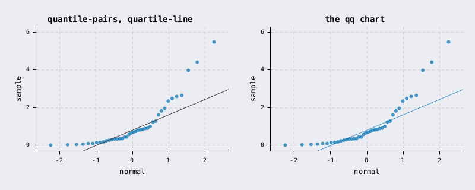
31.1.1 Distributions
Any fastmath distribution (fastmath.random/distributions-list) is a side of a qq / pp chart, as [:name] or [:name params]:
(count r/distributions-list)129(sort r/distributions-list)(:anderson-darling
:anderson-darling-quick
:bb
:bernoulli
:beta
:beta-binomial
:beta-noncentral
:beta-symmetrical
:binomial
:categorical
:categorical-distribution
:cauchy
:chi
:chi-squared
:chi-squared-noncentral
:constant
:continuous-distribution
:cramer-von-mises
:dirichlet
:empirical
:enumerated-int
:enumerated-real
:erlang
:ex-gaussian
:exgaus
:exponential
:f
:f-noncentral
:fatigue-life
:fishers-noncentral-hypergeometric
:folded-normal
:frechet
:gamma
:ge
:generalized-exponential
:generalized-extreme-value
:generalized-gamma
:generalized-half-logistic
:generalized-hyperbolic
:generalized-inverse-gaussian
:generalized-logistic
:generalized-normal
:generalized-pareto
:geometric
:gev
:gg
:gh
:ghl
:gig
:gnd
:gpd
:gumbel
:half-cauchy
:half-logistic
:half-normal
:hyperbolic-secant
:hypergeometric
:hypoexponential
:hypoexponential-equal
:integer-discrete
:integer-discrete-distribution
:inverse-gamma
:inverse-gaussian
:johnson-sb
:johnson-sl
:johnson-su
:kde
:kolmogorov
:kolmogorov-smirnov
:kolmogorov-smirnov+
:kolmogorov-smirnov-quick
:laplace
:levy
:log-logistic
:log-normal
:logarithmic
:logistic
:mixture
:multi-normal
:multinomial
:nakagami
:nbi
:nbii
:negative-binomial
:normal
:normal-inverse-gaussian
:pareto
:pascal
:pearson-6
:poisson
:power
:rayleigh
:real-discrete
:real-discrete-distribution
:reciprocal
:t
:t-noncentral
:triangular
:truncated
:uniform-int
:uniform-real
:von-mises
:wallenius-noncentral-hypergeometric
:watson-g
:watson-u
:weibull
:zabb
:zabi
:zaga
:zaig
:zanbi
:zap
:zero-adjusted-beta-binomial
:zero-adjusted-binomial
:zero-adjusted-gamma
:zero-adjusted-inverse-gaussian
:zero-adjusted-negative-binomial
:zero-adjusted-poisson
:zero-inflated-beta-binomial
:zero-inflated-binomial
:zero-inflated-negative-binomial
:zero-inflated-poisson
:zero-inflated-poisson2
:zibb
:zibi
:zinbi
:zip
:zip2
:zipf)The sample against three of them - the exponential (the sample’s own distribution) comes closest to a straight line; 40 values leave its upper tail scattered:
(plot/render-image (plot/arrange [{:data {:v sample} :mapping {:y :v}
:charts [(chart/qq {:x-distribution [:normal]})]
:labels {:title "[:normal]"}}
{:data {:v sample} :mapping {:y :v}
:charts [(chart/qq {:x-distribution [:uniform-real {:lower 0 :upper 1}]})]
:labels {:title "[:uniform-real {:lower 0 :upper 1}]"}}
{:data {:v sample} :mapping {:y :v}
:charts [(chart/qq {:x-distribution [:exponential {:rate 0.5}]})]
:labels {:title "[:exponential {:rate 0.5}]"}}]
{:columns 3})
{:width 1000 :height 300})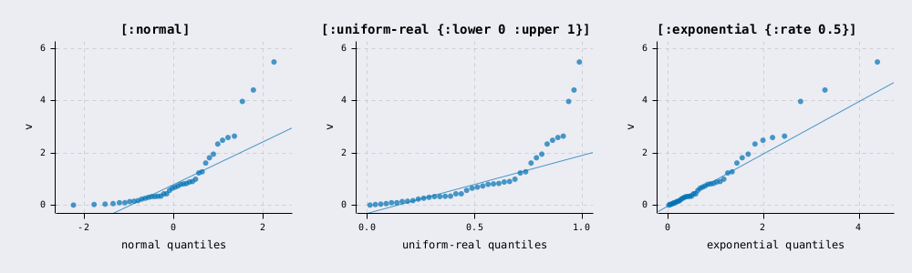
31.2 cljplot2.data.kde
Kernel density estimates (the density, violin charts): estimate gives the density function and the span the curve covers (:cut bandwidths past the data), curve evaluates it at given points:
(def eruption-kde (kde/estimate (map :eruptions faithful) {:kernel :epanechnikov :bandwidth 0.3}))(dissoc eruption-kde :kde){:lo 0.7000000000000002, :hi 6.0}(def eruption-curve (kde/curve eruption-kde (kde/grid-points (:lo eruption-kde) (:hi eruption-kde) 200)))| x | y |
|---|---|
| 0.7000000000000002 | 0.0 |
| 0.7266331658291459 | 0.0 |
| 0.7532663316582916 | 0.0 |
| 0.7798994974874374 | 0.0 |
| 0.8065326633165831 | 0.0 |
| 0.8331658291457288 | 0.0 |
| 0.8597989949748746 | 0.0 |
| 0.8864321608040202 | 0.0 |
| 0.913065326633166 | 0.0 |
| 0.9396984924623117 | 0.0 |
| 0.9663316582914574 | 0.0 |
| 0.9929648241206033 | 0.0 |
| 1.019597989949749 | 0.0 |
| 1.0462311557788946 | 0.0 |
| 1.0728643216080402 | 0.0 |
| 1.0994974874371861 | 0.0 |
| 1.1261306532663318 | 0.0 |
| 1.1527638190954774 | 0.0 |
| 1.1793969849246233 | 0.0 |
| 1.206030150753769 | 0.0 |
| 1.2326633165829146 | 0.0 |
| 1.2592964824120605 | 0.0 |
| 1.2859296482412064 | 0.0 |
| 1.3125628140703518 | 7.536625964915022E-4 |
| 1.3391959798994977 | 0.0022448185354796506 |
| 1.3658291457286433 | 0.0035910958956110084 |
| 1.392462311557789 | 0.006286475234974588 |
| 1.4190954773869349 | 0.009896808674596939 |
| 1.4457286432160805 | 0.014303572286952893 |
| 1.4723618090452262 | 0.026917408476967903 |
| 1.498994974874372 | 0.041571903604880354 |
| 1.525628140703518 | 0.06339102383128355 |
| 1.5522613065326634 | 0.09438571202503972 |
| 1.5788944723618092 | 0.13334770370495566 |
| 1.605527638190955 | 0.1798105611388224 |
| 1.6321608040201006 | 0.22330241273739884 |
| 1.6587939698492464 | 0.2656982547923301 |
| 1.685427135678392 | 0.30653080422888285 |
| 1.7120603015075377 | 0.34902932975796297 |
| 1.7386934673366834 | 0.39175276253122837 |
| 1.7653266331658293 | 0.42935468556562084 |
| 1.791959798994975 | 0.46081128874493676 |
| 1.8185929648241208 | 0.4887849244126836 |
| 1.8452261306532665 | 0.509428242220129 |
| 1.8718592964824123 | 0.5231499753778626 |
| 1.898492462311558 | 0.5307150342435402 |
| 1.9251256281407036 | 0.5352094821472252 |
| 1.9517587939698493 | 0.5329637997609694 |
| 1.978391959798995 | 0.5249660282194176 |
| 2.0050251256281406 | 0.5094513843088897 |
| 2.0316582914572865 | 0.48630013738295613 |
| 2.0582914572864324 | 0.4589979355318276 |
| 2.084924623115578 | 0.4301093176262262 |
| 2.1115577889447237 | 0.3996522975560919 |
| 2.1381909547738696 | 0.37289910199573656 |
| 2.164824120603015 | 0.3491230366425314 |
| 2.191457286432161 | 0.3327288762648019 |
| 2.2180904522613067 | 0.31546502251502856 |
| 2.244723618090452 | 0.29541900697921747 |
| 2.271356783919598 | 0.27236246818602583 |
| 2.297989949748744 | 0.25001897312126353 |
| 2.3246231155778894 | 0.23199724812706937 |
| 2.3512562814070357 | 0.21737126739089632 |
| 2.377889447236181 | 0.20003147258899337 |
| 2.4045226130653266 | 0.1824198772409607 |
| 2.431155778894473 | 0.1652873019016236 |
| 2.4577889447236183 | 0.14616327066687496 |
| 2.4844221105527637 | 0.12678786214693372 |
| 2.5110552763819096 | 0.10940619777356744 |
| 2.5376884422110555 | 0.09464106649541999 |
| 2.564321608040201 | 0.08201670816981502 |
| 2.590954773869347 | 0.07105337189135646 |
| 2.6175879396984927 | 0.06256070587556542 |
| 2.644221105527638 | 0.055375282010357255 |
| 2.670854271356784 | 0.048786480150221474 |
| 2.69748743718593 | 0.04320662297698128 |
| 2.7241206030150753 | 0.04086490593960708 |
| 2.750753768844221 | 0.04027402002251876 |
| 2.7773869346733666 | 0.03943929894684363 |
| 2.8040201005025125 | 0.03994598170467736 |
| 2.8306532663316584 | 0.03992411323994425 |
| 2.8572864321608042 | 0.03903297330207049 |
| 2.8839195979899497 | 0.0372725618910561 |
| 2.9105527638190956 | 0.03464287900690101 |
| 2.9371859296482414 | 0.032680700521814564 |
| 2.9638190954773873 | 0.03185379919909428 |
| 2.9904522613065327 | 0.030447383560946905 |
| 3.0170854271356786 | 0.02846668736795365 |
| 3.0437185929648245 | 0.02875036061046766 |
| 3.07035175879397 | 0.030226159912653195 |
| 3.096984924623116 | 0.032024841136950526 |
| 3.1236180904522612 | 0.03456969426328688 |
| 3.150251256281407 | 0.03742205201593822 |
| 3.176884422110553 | 0.04065812009156121 |
| 3.2035175879396984 | 0.0445358292668304 |
| 3.2301507537688443 | 0.05178429591610137 |
| 3.2567839195979897 | 0.05772885535566124 |
| 3.2834170854271356 | 0.06432635614808363 |
| 3.3100502512562815 | 0.07302551588739842 |
| 3.3366834170854274 | 0.08372827055474771 |
| … | … |
The curve as a filled line, the data as a rug:
(plot/render-image {:data eruption-curve
:mapping {:x :x :y :y}
:charts [(chart/line {:fill :color})
(chart/rug {:data faithful :mapping {:x :eruptions :y nil}})]
:labels {:x "eruptions [min]" :y "density"}}
{:width 600 :height 300})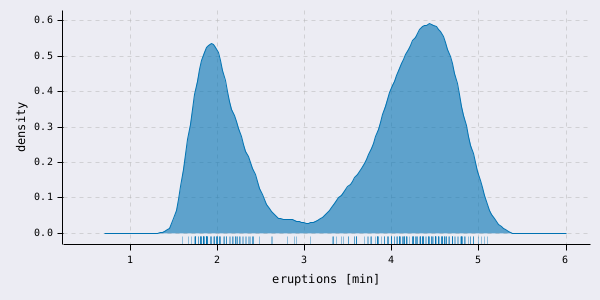
31.2.1 Kernels
The kernels density and violin take as :kernel ((:kde fastmath.kernel/kernel-list)):
(sort (:kde kernel/kernel-list))(:cauchy
:cosine
:epanechnikov
:gaussian
:laplace
:logistic
:quartic
:sigmoid
:silverman
:triangular
:tricube
:triweight
:uniform
:wigner)Four of them with the same :bandwidth (density) - the curves differ in smoothness: the gaussian is the smoothest here, the uniform kernel’s box shape makes its curve ragged:
(plot/render-image (plot/arrange [{:data faithful :mapping {:x :eruptions}
:charts [(chart/density {:kernel :gaussian :bandwidth 0.4})]
:labels {:title ":gaussian"}}
{:data faithful :mapping {:x :eruptions}
:charts [(chart/density {:kernel :epanechnikov :bandwidth 0.4})]
:labels {:title ":epanechnikov"}}
{:data faithful :mapping {:x :eruptions}
:charts [(chart/density {:kernel :uniform :bandwidth 0.4})]
:labels {:title ":uniform"}}
{:data faithful :mapping {:x :eruptions}
:charts [(chart/density {:kernel :triangular :bandwidth 0.4})]
:labels {:title ":triangular"}}]
{:columns 4})
{:width 1000 :height 260})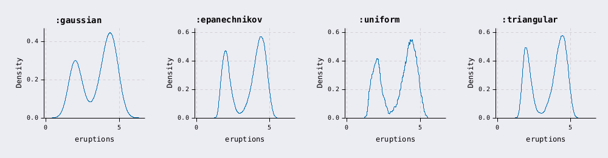
31.3 cljplot2.data.smooth
The fits of the smooth chart: fit-curve fits ys on xs by a method and evaluates the fit and its bands at the given points - {:fit [..] :bands [{:level :lo :hi}]}:
(def eruption-xs (mapv :eruptions faithful))| value |
|---|
| 3.6 |
| 1.8 |
| 3.333 |
| 2.283 |
| 4.533 |
| 2.883 |
| 4.7 |
| 3.6 |
| 1.95 |
| 4.35 |
| 1.833 |
| 3.917 |
| 4.2 |
| 1.75 |
| 4.7 |
| 2.167 |
| 1.75 |
| 4.8 |
| 1.6 |
| 4.25 |
| 1.8 |
| 1.75 |
| 3.45 |
| 3.067 |
| 4.533 |
| 3.6 |
| 1.967 |
| 4.083 |
| 3.85 |
| 4.433 |
| 4.3 |
| 4.467 |
| 3.367 |
| 4.033 |
| 3.833 |
| 2.017 |
| 1.867 |
| 4.833 |
| 1.833 |
| 4.783 |
| 4.35 |
| 1.883 |
| 4.567 |
| 1.75 |
| 4.533 |
| 3.317 |
| 3.833 |
| 2.1 |
| 4.633 |
| 2 |
| 4.8 |
| 4.716 |
| 1.833 |
| 4.833 |
| 1.733 |
| 4.883 |
| 3.717 |
| 1.667 |
| 4.567 |
| 4.317 |
| 2.233 |
| 4.5 |
| 1.75 |
| 4.8 |
| 1.817 |
| 4.4 |
| 4.167 |
| 4.7 |
| 2.067 |
| 4.7 |
| 4.033 |
| 1.967 |
| 4.5 |
| 4 |
| 1.983 |
| 5.067 |
| 2.017 |
| 4.567 |
| 3.883 |
| 3.6 |
| 4.133 |
| 4.333 |
| 4.1 |
| 2.633 |
| 4.067 |
| 4.933 |
| 3.95 |
| 4.517 |
| 2.167 |
| 4 |
| 2.2 |
| 4.333 |
| 1.867 |
| 4.817 |
| 1.833 |
| 4.3 |
| 4.667 |
| 3.75 |
| 1.867 |
| 4.9 |
| … |
(def waiting-ys (mapv :waiting faithful))| value |
|---|
| 79 |
| 54 |
| 74 |
| 62 |
| 85 |
| 55 |
| 88 |
| 85 |
| 51 |
| 85 |
| 54 |
| 84 |
| 78 |
| 47 |
| 83 |
| 52 |
| 62 |
| 84 |
| 52 |
| 79 |
| 51 |
| 47 |
| 78 |
| 69 |
| 74 |
| 83 |
| 55 |
| 76 |
| 78 |
| 79 |
| 73 |
| 77 |
| 66 |
| 80 |
| 74 |
| 52 |
| 48 |
| 80 |
| 59 |
| 90 |
| 80 |
| 58 |
| 84 |
| 58 |
| 73 |
| 83 |
| 64 |
| 53 |
| 82 |
| 59 |
| 75 |
| 90 |
| 54 |
| 80 |
| 54 |
| 83 |
| 71 |
| 64 |
| 77 |
| 81 |
| 59 |
| 84 |
| 48 |
| 82 |
| 60 |
| 92 |
| 78 |
| 78 |
| 65 |
| 73 |
| 82 |
| 56 |
| 79 |
| 71 |
| 62 |
| 76 |
| 60 |
| 78 |
| 76 |
| 83 |
| 75 |
| 82 |
| 70 |
| 65 |
| 73 |
| 88 |
| 76 |
| 80 |
| 48 |
| 86 |
| 60 |
| 90 |
| 50 |
| 78 |
| 63 |
| 72 |
| 84 |
| 75 |
| 51 |
| 82 |
| … |
(def fit-xs (vec (range 1.6 5.2 0.1)))| value |
|---|
| 1.6 |
| 1.7000000000000002 |
| 1.8000000000000003 |
| 1.9000000000000004 |
| 2.0000000000000004 |
| 2.1000000000000005 |
| 2.2000000000000006 |
| 2.3000000000000007 |
| 2.400000000000001 |
| 2.500000000000001 |
| 2.600000000000001 |
| 2.700000000000001 |
| 2.800000000000001 |
| 2.9000000000000012 |
| 3.0000000000000013 |
| 3.1000000000000014 |
| 3.2000000000000015 |
| 3.3000000000000016 |
| 3.4000000000000017 |
| 3.5000000000000018 |
| 3.600000000000002 |
| 3.700000000000002 |
| 3.800000000000002 |
| 3.900000000000002 |
| 4.000000000000002 |
| 4.100000000000001 |
| 4.200000000000001 |
| 4.300000000000001 |
| 4.4 |
| 4.5 |
| 4.6 |
| 4.699999999999999 |
| 4.799999999999999 |
| 4.899999999999999 |
| 4.999999999999998 |
| 5.099999999999998 |
| 5.1999999999999975 |
(def quadratic (smooth/fit-curve {:method :lm :params {:degree 2} :band :prediction :levels [0.5 0.95]}
eruption-xs waiting-ys fit-xs))| x | fit | lo-95 | hi-95 |
|---|---|---|---|
| 1.6 | 48.21958649723071 | 36.69738543056889 | 59.74178756389252 |
| 1.7000000000000002 | 49.85805500896073 | 38.37085689594542 | 61.34525312197604 |
| 1.8000000000000003 | 51.46119948366555 | 39.99993570116254 | 62.92246326616856 |
| 1.9000000000000004 | 53.02901992134517 | 41.58592105853596 | 64.47211878415438 |
| 2.0000000000000004 | 54.561516321999584 | 43.130047426108845 | 65.99298521789032 |
| 2.1000000000000005 | 56.058688685628795 | 44.63347623019693 | 67.48390114106066 |
| 2.2000000000000006 | 57.52053701223281 | 46.097289402689185 | 68.94378462177643 |
| 2.3000000000000007 | 58.94706130181161 | 47.52248454919933 | 70.37163805442388 |
| 2.400000000000001 | 60.33826155436522 | 48.909971528941725 | 71.76655157978871 |
| 2.500000000000001 | 61.69413776989362 | 50.26057021155623 | 73.12770532823102 |
| 2.600000000000001 | 63.01468994839683 | 51.575009176027876 | 74.45437072076578 |
| 2.700000000000001 | 64.29991808987482 | 52.85392512826911 | 75.74591105148053 |
| 2.800000000000001 | 65.54982219432762 | 54.097862833171575 | 77.00178155548366 |
| 2.9000000000000012 | 66.76440226175522 | 55.3072753809216 | 78.22152914258884 |
| 3.0000000000000013 | 67.94365829215762 | 56.48252463375779 | 79.40479195055745 |
| 3.1000000000000014 | 69.08759028553482 | 57.623881726473684 | 80.55129884459595 |
| 3.2000000000000015 | 70.1961982418868 | 58.73152752080263 | 81.66086896297098 |
| 3.3000000000000016 | 71.26948216121359 | 59.80555293984573 | 82.73341138258145 |
| 3.4000000000000017 | 72.30744204351518 | 60.84595913379885 | 83.7689249532315 |
| 3.5000000000000018 | 73.31007788879157 | 61.85265745256882 | 84.76749832501432 |
| 3.600000000000002 | 74.27738969704275 | 62.825469224795995 | 85.7293101692895 |
| 3.700000000000002 | 75.20937746826873 | 63.76412536676411 | 86.65462956977333 |
| 3.800000000000002 | 76.1060412024695 | 64.66826586912707 | 87.54381653581193 |
| 3.900000000000002 | 76.96738089964508 | 65.5374392346752 | 88.39732256461495 |
| 4.000000000000002 | 77.79339655979545 | 66.3711019666799 | 89.215691152911 |
| 4.100000000000001 | 78.58408818292062 | 67.16861823458773 | 89.99955813125352 |
| 4.200000000000001 | 79.33945576902059 | 67.92925987147584 | 90.74965166656534 |
| 4.300000000000001 | 80.05949931809536 | 68.65220688470295 | 91.46679175148778 |
| 4.4 | 80.74421883014493 | 69.33654868593345 | 92.15188897435641 |
| 4.5 | 81.3936143051693 | 69.98128626680295 | 92.80594234353563 |
| 4.6 | 82.00768574316845 | 70.58533555881735 | 93.43003592751955 |
| 4.699999999999999 | 82.5864331441424 | 71.1475322168709 | 94.02533407141391 |
| 4.799999999999999 | 83.12985650809117 | 71.66663805085616 | 94.59307496532617 |
| 4.899999999999999 | 83.63795583501472 | 72.1413492950693 | 95.13456237496014 |
| 4.999999999999998 | 84.11073112491309 | 72.57030684703099 | 95.65115540279518 |
| 5.099999999999998 | 84.54818237778623 | 72.9521085240327 | 96.14425623153977 |
| 5.1999999999999975 | 84.95030959363419 | 73.28532327778906 | 96.61529590947931 |
Drawn as ribbons (the 95% and 50% prediction bands) under the fitted line and the points:
(plot/render-image (let [[wide narrow] (:bands quadratic)]
{:charts [(chart/ribbon {:data {:x fit-xs :ymin (:lo wide) :ymax (:hi wide)} :mapping {:x :x :ymin :ymin :ymax :ymax}
:alpha 0.2})
(chart/ribbon {:data {:x fit-xs :ymin (:lo narrow) :ymax (:hi narrow)} :mapping {:x :x :ymin :ymin :ymax :ymax}
:alpha 0.35})
(chart/scatter {:data faithful :mapping {:x :eruptions :y :waiting} :size 4})
(chart/line {:data {:x fit-xs :y (:fit quadratic)} :mapping {:x :x :y :y} :line-width 2})]
:labels {:x "eruptions [min]" :y "waiting [min]"}})
{:width 600 :height 350})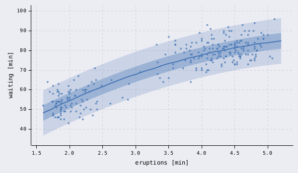
31.4 cljplot2.data.dots
Dot plot bins (the dotplot chart) of sorted values - here the first 40 waiting times: Wilkinson’s dot density bins - each starts at the first value not yet binned and is centred on its values - or fixed bins from an origin:
(def waits (sort (map :waiting (take 40 faithful))))| value |
|---|
| 47 |
| 47 |
| 48 |
| 51 |
| 51 |
| 52 |
| 52 |
| 52 |
| 54 |
| 54 |
| 55 |
| 55 |
| 59 |
| 62 |
| 62 |
| 66 |
| 69 |
| 73 |
| 74 |
| 74 |
| 74 |
| 76 |
| 77 |
| 78 |
| 78 |
| 78 |
| 79 |
| 79 |
| 79 |
| 80 |
| 80 |
| 83 |
| 83 |
| 84 |
| 84 |
| 85 |
| 85 |
| 85 |
| 88 |
| 90 |
(dots/dot-density-bins waits 4.0)[{:center 47.5, :values [47 47 48]}
{:center 52.5, :values [51 51 52 52 52 54 54]}
{:center 55.0, :values [55 55]}
{:center 60.5, :values [59 62 62]}
{:center 67.5, :values [66 69]}
{:center 74.5, :values [73 74 74 74 76]}
{:center 78.5, :values [77 78 78 78 79 79 79 80 80]}
{:center 84.0, :values [83 83 84 84 85 85 85]}
{:center 89.0, :values [88 90]}](dots/fixed-bins waits 4.0 40.0)[{:center 46.0, :values [47 47]}
{:center 50.0, :values [48 51 51]}
{:center 54.0, :values [52 52 52 54 54 55 55]}
{:center 58.0, :values [59]}
{:center 62.0, :values [62 62]}
{:center 66.0, :values [66]}
{:center 70.0, :values [69]}
{:center 74.0, :values [73 74 74 74]}
{:center 78.0, :values [76 77 78 78 78 79 79 79]}
{:center 82.0, :values [80 80 83 83]}
{:center 86.0, :values [84 84 85 85 85]}
{:center 90.0, :values [88 90]}]The dot density bins stacked by hand - one point per value, centred on its bin:
(def dot-rows (for [{:keys [center values]} (dots/dot-density-bins waits 4.0)
i (range (count values))]
{:x center :y (inc i)}))| x | y |
|---|---|
| 47.5 | 1 |
| 47.5 | 2 |
| 47.5 | 3 |
| 52.5 | 1 |
| 52.5 | 2 |
| 52.5 | 3 |
| 52.5 | 4 |
| 52.5 | 5 |
| 52.5 | 6 |
| 52.5 | 7 |
| 55.0 | 1 |
| 55.0 | 2 |
| 60.5 | 1 |
| 60.5 | 2 |
| 60.5 | 3 |
| 67.5 | 1 |
| 67.5 | 2 |
| 74.5 | 1 |
| 74.5 | 2 |
| 74.5 | 3 |
| 74.5 | 4 |
| 74.5 | 5 |
| 78.5 | 1 |
| 78.5 | 2 |
| 78.5 | 3 |
| 78.5 | 4 |
| 78.5 | 5 |
| 78.5 | 6 |
| 78.5 | 7 |
| 78.5 | 8 |
| 78.5 | 9 |
| 84.0 | 1 |
| 84.0 | 2 |
| 84.0 | 3 |
| 84.0 | 4 |
| 84.0 | 5 |
| 84.0 | 6 |
| 84.0 | 7 |
| 89.0 | 1 |
| 89.0 | 2 |
(plot/render-image {:data dot-rows
:mapping {:x :x :y :y}
:charts [(chart/scatter {:size 14})]
:labels {:x "waiting [min]" :y "count"}}
{:width 600 :height 280})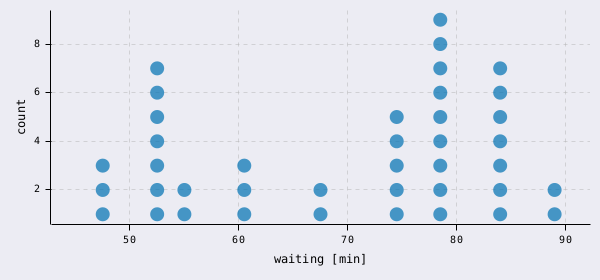
31.5 cljplot2.layout.pack
Circle packing (the pack chart): pack places a tree of values in a pixel box - every node gets :x :y :r; pack-siblings gives the centres of circles of the given radii packed side by side, and enclose finds the smallest circle around circles:
(def packed (pack/pack {:value 20 :children [{:value 8} {:value 5} {:value 4} {:value 2} {:value 1}]}
{:x 0 :y 0 :w 100 :h 100} 2))| value | r | x | y |
|---|---|---|---|
| 8 | 23.87506941071494 | 32.75690714630248 | 46.3331386125916 |
| 5 | 18.87489965811832 | 77.50694918032838 | 46.3331386125916 |
| 4 | 16.88222348161604 | 59.63009686963869 | 79.59007787596495 |
| 2 | 11.93753470535747 | 59.0775994387703 | 19.18503176704429 |
| 1 | 8.44111174080802 | 37.75760484130298 | 12.383200186046295 |
(pack/pack-siblings [3 2 2 1])[[-2.0 0.0] [3.0 0.0] [1.4 3.666060555964672] [1.2000000000000002 -2.4]](pack/enclose [{:x 0 :y 0 :r 1} {:x 3 :y 0 :r 1}]){:x 1.5, :y 0.0, :r 2.5}The packed circles drawn as polygons outlined in their own colour (:stroke-color :color) - the root’s circle in grey, the children in colour:
(def circle-outlines (for [[i {:keys [x y r]}] (map-indexed vector (cons packed (:children packed)))
a (range 0 360 2)]
{:circle (if (zero? i) "root" (str "value " (:value (nth (:children packed) (dec i)))))
:x (m/+ x (m/* r (m/cos (m/radians a))))
:y (m/+ y (m/* r (m/sin (m/radians a))))}))| circle | x | y |
|---|---|---|
| root | 100.0 | 50.0 |
| root | 99.96954135095478 | 51.74497483512505 |
| root | 99.87820251299121 | 53.487823687206266 |
| root | 99.72609476841366 | 55.22642316338268 |
| root | 99.51340343707851 | 56.95865504800327 |
| root | 99.24038765061039 | 58.68240888334651 |
| root | 98.90738003669028 | 60.39558454088797 |
| root | 98.51478631379982 | 62.09609477998339 |
| root | 98.06308479691594 | 63.78186779084996 |
| root | 97.55282581475767 | 65.45084971874736 |
| root | 96.98463103929541 | 67.10100716628344 |
| root | 96.35919272833937 | 68.7303296707956 |
| root | 95.67727288213004 | 70.33683215379 |
| root | 94.93970231495834 | 71.91855733945387 |
| root | 94.14737964294633 | 73.47357813929455 |
| root | 93.30127018922192 | 75.0 |
| root | 92.40240480782128 | 76.49596321166024 |
| root | 91.45187862775208 | 77.95964517353734 |
| root | 90.45084971874736 | 79.38926261462365 |
| root | 89.40053768033609 | 80.78307376628291 |
| root | 88.3022221559489 | 82.13938048432695 |
| root | 87.15724127386972 | 83.4565303179429 |
| root | 85.96699001693256 | 84.73291852294986 |
| root | 84.73291852294986 | 85.96699001693256 |
| root | 83.4565303179429 | 87.15724127386972 |
| root | 82.13938048432696 | 88.3022221559489 |
| root | 80.78307376628291 | 89.4005376803361 |
| root | 79.38926261462365 | 90.45084971874736 |
| root | 77.95964517353734 | 91.45187862775208 |
| root | 76.49596321166024 | 92.40240480782128 |
| root | 75.0 | 93.30127018922192 |
| root | 73.47357813929455 | 94.14737964294633 |
| root | 71.91855733945387 | 94.93970231495834 |
| root | 70.33683215379 | 95.67727288213004 |
| root | 68.7303296707956 | 96.35919272833937 |
| root | 67.10100716628344 | 96.98463103929541 |
| root | 65.45084971874738 | 97.55282581475767 |
| root | 63.78186779084996 | 98.06308479691594 |
| root | 62.09609477998338 | 98.51478631379982 |
| root | 60.39558454088797 | 98.90738003669027 |
| root | 58.68240888334652 | 99.24038765061039 |
| root | 56.95865504800327 | 99.51340343707851 |
| root | 55.22642316338267 | 99.72609476841366 |
| root | 53.48782368720626 | 99.87820251299121 |
| root | 51.744974835125056 | 99.96954135095478 |
| root | 50.0 | 100.0 |
| root | 48.25502516487495 | 99.96954135095478 |
| root | 46.512176312793734 | 99.87820251299121 |
| root | 44.77357683661732 | 99.72609476841366 |
| root | 43.041344951996734 | 99.51340343707851 |
| root | 41.31759111665349 | 99.24038765061039 |
| root | 39.60441545911203 | 98.90738003669028 |
| root | 37.90390522001661 | 98.51478631379982 |
| root | 36.21813220915005 | 98.06308479691594 |
| root | 34.549150281252636 | 97.55282581475768 |
| root | 32.89899283371656 | 96.98463103929541 |
| root | 31.2696703292044 | 96.35919272833937 |
| root | 29.66316784620999 | 95.67727288213004 |
| root | 28.081442660546127 | 94.93970231495834 |
| root | 26.526421860705458 | 94.14737964294633 |
| root | 25.000000000000014 | 93.30127018922192 |
| root | 23.504036788339764 | 92.4024048078213 |
| root | 22.04035482646267 | 91.45187862775208 |
| root | 20.610737385376353 | 90.45084971874736 |
| root | 19.21692623371709 | 89.4005376803361 |
| root | 17.860619515673037 | 88.3022221559489 |
| root | 16.543469682057093 | 87.15724127386972 |
| root | 15.267081477050134 | 85.96699001693256 |
| root | 14.033009983067444 | 84.73291852294986 |
| root | 12.842758726130306 | 83.4565303179429 |
| root | 11.69777784405111 | 82.13938048432698 |
| root | 10.599462319663914 | 80.78307376628291 |
| root | 9.549150281252636 | 79.38926261462366 |
| root | 8.548121372247927 | 77.95964517353734 |
| root | 7.597595192178709 | 76.49596321166024 |
| root | 6.698729810778069 | 75.0 |
| root | 5.8526203570536595 | 73.47357813929453 |
| root | 5.060297685041654 | 71.91855733945386 |
| root | 4.322727117869967 | 70.33683215379003 |
| root | 3.640807271660641 | 68.73032967079561 |
| root | 3.015368960704592 | 67.10100716628344 |
| root | 2.447174185242332 | 65.45084971874738 |
| root | 1.9369152030840624 | 63.78186779084996 |
| root | 1.4852136862001828 | 62.09609477998339 |
| root | 1.0926199633097227 | 60.39558454088797 |
| root | 0.7596123493896059 | 58.68240888334651 |
| root | 0.4865965629214912 | 56.958655048003266 |
| root | 0.2739052315863404 | 55.226423163382684 |
| root | 0.12179748700879856 | 53.48782368720627 |
| root | 0.03045864904522233 | 51.744974835125056 |
| root | 7.105427357601002E-15 | 50.00000000000001 |
| root | 0.03045864904522233 | 48.25502516487496 |
| root | 0.12179748700879856 | 46.512176312793734 |
| root | 0.2739052315863404 | 44.77357683661732 |
| root | 0.4865965629214912 | 43.04134495199673 |
| root | 0.7596123493896059 | 41.317591116653475 |
| root | 1.0926199633097298 | 39.604415459112026 |
| root | 1.4852136862001828 | 37.903905220016625 |
| root | 1.9369152030840624 | 36.218132209150056 |
| root | 2.447174185242325 | 34.549150281252636 |
| … | … | … |
(plot/render-image {:data circle-outlines
:mapping {:x :x :y :y :color :circle}
:charts [(chart/polygon {:alpha 0.6 :stroke-color :color})]
:scales {:color {:domain ["root" "value 8" "value 5" "value 4" "value 2" "value 1"]
:range [[200 200 200] [31 119 180] [255 127 14] [44 160 44] [214 39 40] [148 103 189]]}}}
{:width 560 :height 450})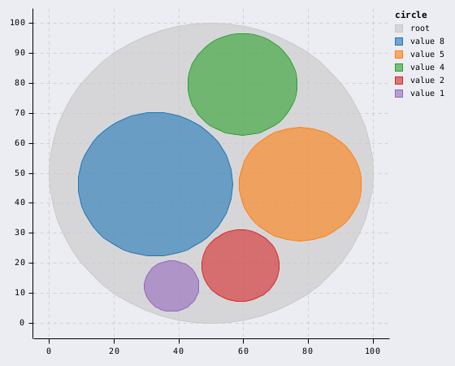
31.6 cljplot2.layout.treemap
Treemap rectangles (the treemap chart) of values in a box: squarified (near-square rectangles in the given order, best with values in decreasing order, as here) or slice-and-dice (strips along x at even depths, along y at odd ones):
(def shares [6 3 2 1 1])| x | y | w | h |
|---|---|---|---|
| 0 | 0 | 46.15384615384616 | 60.0 |
| 46.15384615384616 | 0 | 32.30769230769231 | 42.85714285714286 |
| 78.46153846153847 | 0 | 21.538461538461537 | 42.85714285714286 |
| 46.15384615384616 | 42.85714285714286 | 26.92307692307693 | 17.14285714285714 |
| 73.0769230769231 | 42.85714285714286 | 26.92307692307693 | 17.14285714285714 |
| x | y | w | h |
|---|---|---|---|
| 0.0 | 0 | 46.15384615384615 | 60 |
| 46.15384615384615 | 0 | 23.076923076923077 | 60 |
| 69.23076923076923 | 0 | 15.384615384615385 | 60 |
| 84.61538461538461 | 0 | 7.6923076923076925 | 60 |
| 92.3076923076923 | 0 | 7.6923076923076925 | 60 |
Both layouts drawn with the rect chart (an annotation chart: its own data and mapping), outlined in white:
(plot/render-image (plot/arrange (for [[title rects] [["squarify" (treemap/squarify shares {:x 0 :y 0 :w 100 :h 60})]
["slice-dice, depth 0" (treemap/slice-dice shares {:x 0 :y 0 :w 100 :h 60} 0)]]]
{:charts [(chart/rect {:data (map-indexed (fn [i {:keys [x y w h]}]
{:share (str (nth shares i) " (" i ")")
:x0 x :x1 (+ x w) :y0 y :y1 (+ y h)})
rects)
:mapping {:x0 :x0 :x1 :x1 :y0 :y0 :y1 :y1 :color :share}
:stroke-color :white :stroke-width 2})]
:labels {:title title}
:legend false})
{:columns 2})
{:width 900 :height 320})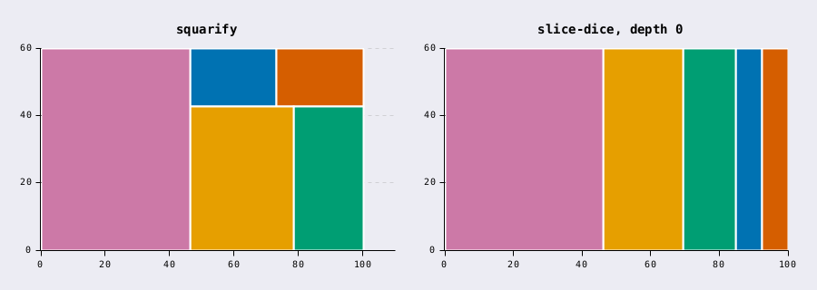
31.7 cljplot2.layout.venn
Venn circles (the venn chart): two sets with areas (and the overlap’s lens) proportional to their sizes, the classic three-set layout, a label point per region, and the lens area of two circles:
(def two-circles (venn/two-sets 10 6 3 true))| x | y | r |
|---|---|---|
| 0.0 | 0.0 | 1.7841241161527712 |
| 1.5915020413128615 | 0.0 | 1.381976597885342 |
(venn/region-points two-circles){#{0} [-0.7872993363626258 0.0],
#{1} [2.3788013776754875 0.0],
#{0 1} [0.9968247797901454 0.0]}(venn/three-sets)[{:x -0.5629165124598852, :y -0.325, :r 1.0}
{:x 0.5629165124598852, :y -0.325, :r 1.0}
{:x 0.0, :y 0.65, :r 1.0}](venn/lens-area 1.0 1.0 1.0)1.228369698608757The two proportional circles drawn as polygons, each region labelled at its point:
(def venn-outlines (for [[i {:keys [x y r]}] (map-indexed vector two-circles)
a (range 0 360 2)]
{:set (nth ["A (10)" "B (6)"] i)
:x (m/+ x (m/* r (m/cos (m/radians a))))
:y (m/+ y (m/* r (m/sin (m/radians a))))}))| set | x | y |
|---|---|---|
| A (10) | 1.7841241161527712 | 0.0 |
| A (10) | 1.7830372759466313 | 0.062265033708526096 |
| A (10) | 1.7797780794755875 | 0.12445420706467154 |
| A (10) | 1.7743504975684994 | 0.18649175214020966 |
| A (10) | 1.766761142897866 | 0.24830208574261714 |
| A (10) | 1.7570192619233023 | 0.30980990150155147 |
| A (10) | 1.7451367236261548 | 0.37094026161806315 |
| A (10) | 1.7311280050489735 | 0.4316186881647602 |
| A (10) | 1.7150101736574672 | 0.49177125382569054 |
| A (10) | 1.6968028665464245 | 0.5513246719653889 |
| A (10) | 1.6765282665149401 | 0.6102063859173529 |
| A (10) | 1.6542110750400891 | 0.6683446573831645 |
| A (10) | 1.6298784821819843 | 0.7256686538345573 |
| A (10) | 1.6035601334568743 | 0.7821085348119394 |
| A (10) | 1.57528809371865 | 0.8375955370142377 |
| A (10) | 1.5450968080927585 | 0.8920620580763855 |
| A (10) | 1.5130230600101238 | 0.9454417389323935 |
| A (10) | 1.4791059263922026 | 0.9976695446636482 |
| A (10) | 1.4433867300417746 | 1.0486818437339422 |
| A (10) | 1.4059089892974719 | 1.0984164855147012 |
| A (10) | 1.3667183650133885 | 1.1468128760059493 |
| A (10) | 1.3258626049283615 | 1.1938120516607658 |
| A (10) | 1.2833914854927069 | 1.2393567512232828 |
| A (10) | 1.2393567512232828 | 1.2833914854927069 |
| A (10) | 1.1938120516607658 | 1.3258626049283615 |
| A (10) | 1.1468128760059495 | 1.3667183650133885 |
| A (10) | 1.0984164855147012 | 1.405908989297472 |
| A (10) | 1.0486818437339422 | 1.4433867300417746 |
| A (10) | 0.997669544663648 | 1.4791059263922028 |
| A (10) | 0.9454417389323935 | 1.5130230600101238 |
| A (10) | 0.8920620580763858 | 1.5450968080927583 |
| A (10) | 0.8375955370142377 | 1.5752880937186498 |
| A (10) | 0.7821085348119395 | 1.6035601334568743 |
| A (10) | 0.7256686538345573 | 1.6298784821819843 |
| A (10) | 0.6683446573831644 | 1.6542110750400891 |
| A (10) | 0.610206385917353 | 1.67652826651494 |
| A (10) | 0.551324671965389 | 1.6968028665464245 |
| A (10) | 0.49177125382569054 | 1.7150101736574672 |
| A (10) | 0.43161868816476007 | 1.7311280050489735 |
| A (10) | 0.3709402616180633 | 1.7451367236261546 |
| A (10) | 0.30980990150155163 | 1.7570192619233023 |
| A (10) | 0.2483020857426172 | 1.766761142897866 |
| A (10) | 0.18649175214020963 | 1.7743504975684994 |
| A (10) | 0.12445420706467142 | 1.7797780794755875 |
| A (10) | 0.06226503370852629 | 1.7830372759466313 |
| A (10) | 1.0924609440640459E-16 | 1.7841241161527712 |
| A (10) | -0.06226503370852607 | 1.7830372759466313 |
| A (10) | -0.1244542070646716 | 1.7797780794755875 |
| A (10) | -0.1864917521402098 | 1.7743504975684994 |
| A (10) | -0.248302085742617 | 1.766761142897866 |
| A (10) | -0.3098099015015514 | 1.7570192619233023 |
| A (10) | -0.37094026161806315 | 1.7451367236261548 |
| A (10) | -0.4316186881647603 | 1.7311280050489735 |
| A (10) | -0.49177125382569037 | 1.7150101736574672 |
| A (10) | -0.5513246719653888 | 1.6968028665464248 |
| A (10) | -0.6102063859173529 | 1.6765282665149401 |
| A (10) | -0.6683446573831646 | 1.6542110750400891 |
| A (10) | -0.7256686538345574 | 1.6298784821819843 |
| A (10) | -0.7821085348119396 | 1.603560133456874 |
| A (10) | -0.8375955370142378 | 1.5752880937186498 |
| A (10) | -0.8920620580763852 | 1.5450968080927585 |
| A (10) | -0.9454417389323934 | 1.513023060010124 |
| A (10) | -0.9976695446636479 | 1.4791059263922028 |
| A (10) | -1.048681843733942 | 1.4433867300417746 |
| A (10) | -1.0984164855147012 | 1.405908989297472 |
| A (10) | -1.1468128760059495 | 1.3667183650133885 |
| A (10) | -1.1938120516607658 | 1.3258626049283615 |
| A (10) | -1.239356751223283 | 1.2833914854927069 |
| A (10) | -1.2833914854927069 | 1.2393567512232826 |
| A (10) | -1.325862604928361 | 1.193812051660766 |
| A (10) | -1.3667183650133883 | 1.1468128760059497 |
| A (10) | -1.4059089892974719 | 1.0984164855147014 |
| A (10) | -1.4433867300417744 | 1.0486818437339425 |
| A (10) | -1.4791059263922026 | 0.9976695446636482 |
| A (10) | -1.5130230600101238 | 0.9454417389323935 |
| A (10) | -1.5450968080927585 | 0.8920620580763855 |
| A (10) | -1.57528809371865 | 0.8375955370142375 |
| A (10) | -1.6035601334568743 | 0.7821085348119392 |
| A (10) | -1.629878482181984 | 0.7256686538345576 |
| A (10) | -1.654211075040089 | 0.668344657383165 |
| A (10) | -1.67652826651494 | 0.6102063859173531 |
| A (10) | -1.6968028665464245 | 0.5513246719653891 |
| A (10) | -1.7150101736574672 | 0.49177125382569065 |
| A (10) | -1.7311280050489735 | 0.4316186881647602 |
| A (10) | -1.7451367236261548 | 0.3709402616180631 |
| A (10) | -1.7570192619233023 | 0.30980990150155135 |
| A (10) | -1.766761142897866 | 0.24830208574261695 |
| A (10) | -1.7743504975684994 | 0.18649175214021013 |
| A (10) | -1.7797780794755875 | 0.12445420706467195 |
| A (10) | -1.7830372759466313 | 0.0622650337085264 |
| A (10) | -1.7841241161527712 | 2.1849218881280918E-16 |
| A (10) | -1.7830372759466313 | -0.06226503370852597 |
| A (10) | -1.7797780794755875 | -0.1244542070646715 |
| A (10) | -1.7743504975684994 | -0.18649175214020972 |
| A (10) | -1.7667611428978658 | -0.2483020857426173 |
| A (10) | -1.7570192619233023 | -0.3098099015015517 |
| A (10) | -1.7451367236261546 | -0.3709402616180634 |
| A (10) | -1.7311280050489735 | -0.4316186881647598 |
| A (10) | -1.7150101736574672 | -0.49177125382569026 |
| A (10) | -1.6968028665464248 | -0.5513246719653887 |
| … | … | … |
(def venn-labels (for [[region [x y]] (venn/region-points two-circles)]
{:x x :y y :text (case region #{0} "A only" #{1} "B only" "both (3)")}))| x | y | text |
|---|---|---|
| -0.7872993363626258 | 0.0 | A only |
| 2.3788013776754875 | 0.0 | B only |
| 0.9968247797901454 | 0.0 | both (3) |
(plot/render-image {:data venn-outlines
:mapping {:x :x :y :y :color :set}
:charts [(chart/polygon {:alpha 0.4 :stroke-color :color})
(chart/text {:data venn-labels :mapping {:x :x :y :y :label :text}})]
:scales {:x {:domain [-2 3.2]} :y {:domain [-2.2 2.2]}}}
{:width 560 :height 380})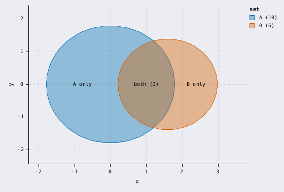
31.8 Recipes
Short compositions of the pieces documented in this part.
A reference curve over a histogram: the histogram on the density scale (:y :density) and the normal density with the data’s mean and standard deviation as a function chart:
(plot/render-image (let [xs (map :waiting faithful)
normal (r/distribution :normal {:mu (stats/mean xs) :sd (stats/stddev xs)})]
{:data faithful
:mapping {:x :waiting}
:charts [(chart/histogram {:y :density :bins 25})
(chart/function {:f #(r/pdf normal %) :domain [40 100] :color [200 50 50] :line-width 2})]
:labels {:x "waiting [min]" :title "a normal curve fails a bimodal sample"}})
{:width 600 :height 320})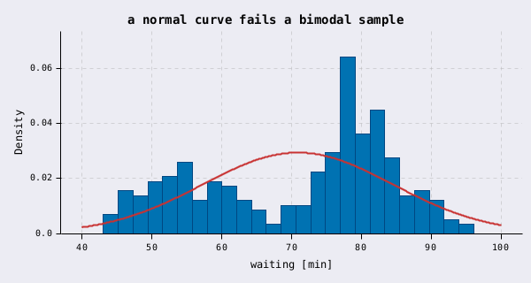
A highlighted interval with an explanation: a band (rect over an x interval), a threshold (rule) and a note (text) layered over a scatter with a loess smooth:
(plot/render-image {:data faithful
:mapping {:x :eruptions :y :waiting}
:charts [(chart/rect {:x [2.5 3.5] :fill [255 200 0 60]})
(chart/scatter {:size 4})
(chart/smooth {:method :loess})
(chart/rule {:y 68 :dash :dashed})
(chart/text {:x 3.0 :y 95 :text "few eruptions of 2.5-3.5 min"})]
:labels {:x "eruptions [min]" :y "waiting [min]"}}
{:width 600 :height 320})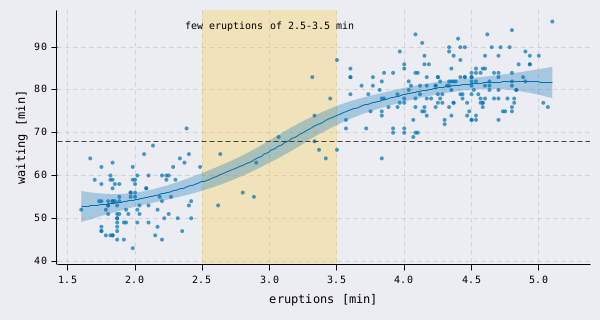
Small multiples built in a loop - one plot per group with a shared domain, arranged in a row:
(plot/render-image (plot/arrange (for [[label pred] [["short" #(< (:eruptions %) 3)] ["long" #(>= (:eruptions %) 3)]]]
{:data (filter pred faithful)
:mapping {:x :waiting}
:charts [(chart/density {:fill :color})]
:scales {:x {:domain [40 100]}}
:labels {:title (str label " eruptions")}})
{:columns 2})
{:width 800 :height 260})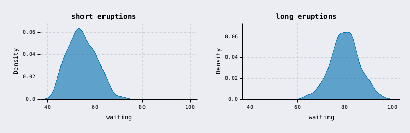
Rendering to a file - plot/save at the end of a render-image pipeline - is shown in Render - Saving.
31.9 Links
The use cases show the charts at work, one family per chapter: distribution, correlation, ranking, part of a whole, evolution, flow and colours. The galleries reproduce other libraries’ examples: lattice, Vega-Lite and cljplot.
source: notebooks/reference/specific_cases.clj